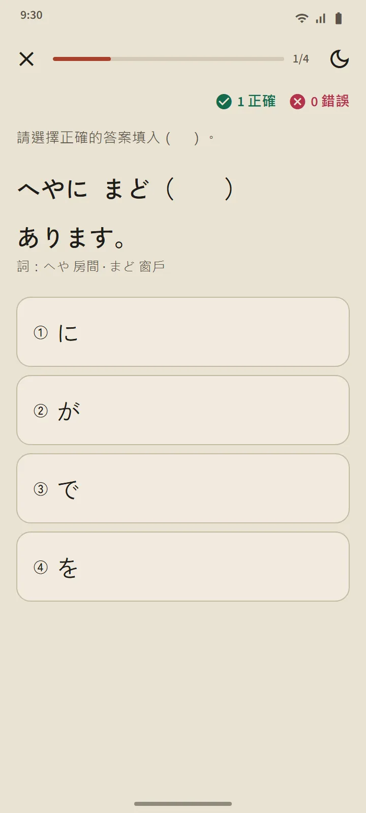
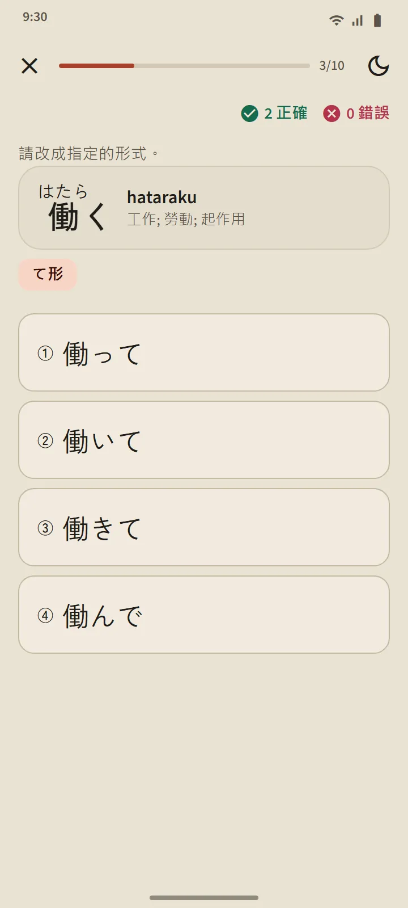

五個級別，268 節課
語法頁面從首頁的「日語基礎」部分開啟。頂部的標籤在 N5、N4、N3、N2 和 N1 之間切換；章節就地展開，每節課標記為未開啟、已閱讀或練習已通過。N5 覆蓋 N5 模擬考試中的全部句型，N3 至 N1 覆蓋對應級別模擬考試中考查的句型。
| 級別 | 課程數 | 使用許可權 |
|---|---|---|
| N5 | 122 | 免費 |
| N4 | 56 | Premium |
| N3 | 25 | Premium |
| N2 | 26 | Premium |
| N1 | 39 | Premium |

一節課的結構
每節課的版式都相同：句型及其含義、接續方法（公式，附例詞）、講解、帶振假名且可以收聽的例句，以及針對相似句型的不要混淆。日語句子只會在詞組之間換行，所以在小螢幕手機上也能輕鬆閱讀。

附解析的練習
課程底部的按鈕會開啟一組三到五道題的練習。每個答案都附有解析；最多答錯一道就算該課通過，未通過的可以重做。結果會記錄在「語法」頁面和「統計」標籤頁中。

變形練習和句型複習
語法頁面的練習區有兩種練習。變形練習把 N5 動詞變成ます形、て形、ない形、辭書形和た形；每種形式在對應課程通過後開放，每個答案都會講解規則。句型複習從已通過的課程中出最多 10 道題，最久沒複習的優先。在考試練習中，語法題透過「學習這個句型」連結到對應課程。

常用語與會話
13 個場景共 78 段短會話：自我介紹與問候、日常閒聊、職場、商店、餐廳、車站、醫院和藥店、電話、政府機關、銀行和郵局、住所與鄰居，緊急情況，以及機場。每段都有帶振假名、羅馬字和釋義的臺詞，用不同聲音朗讀每位說話人的「全部播放」按鈕，重要表達和簡短練習。前 12 段會話免費。

多種語言
說明、例句釋義、答案選項和講解提供 14 種語言：英語、印尼語、越南語、緬甸語、尼泊爾語、泰語、僧伽羅語、菲律賓語、印地語、孟加拉語、蒙古語、高棉語、韓語和繁體中文。日語句子、句型公式和答案在所有語言中都相同。課程為 TokuGo 編寫並經過稽核；公開資料僅用於核對。